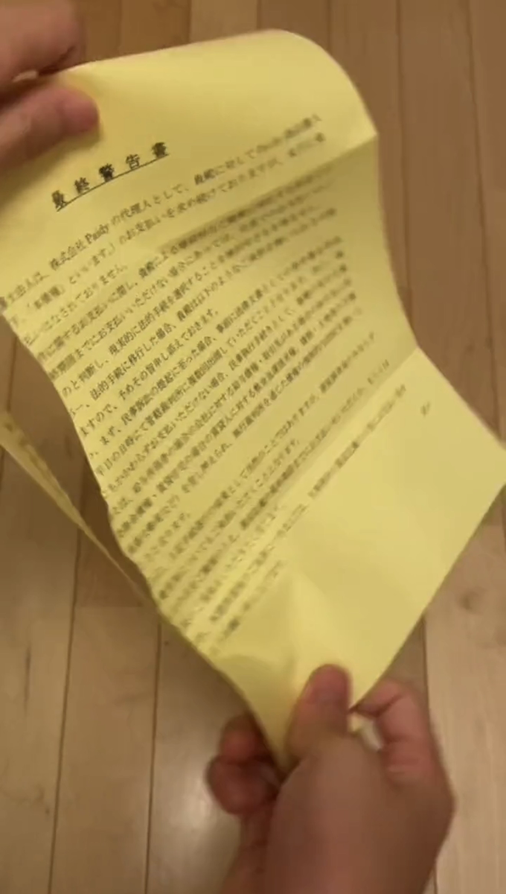

あの頃
閉店したあと、
店に泊まる日もあった。
居酒屋のバイトで、手取り20万。まかないで食いつないでた。
働いても支払いに追いつかなくて、借金は420万になった。
自己破産したのは、そのあと。

トラヴィス
あの頃は、本気で終わったと思った。
LINEで聞く ↗あの頃
居酒屋のバイトで、手取り20万。まかないで食いつないでた。
働いても支払いに追いつかなくて、借金は420万になった。
自己破産したのは、そのあと。

戻るまで
借金の額ばかり気にしてたけど、先に見直したのは毎日の生活だった。
LINE
何から話せばいいか決まってなくても大丈夫。気になったことを、そのまま送って。
20歳未満は舟券を購入できません。生活費や借入金での利用はしないでください。